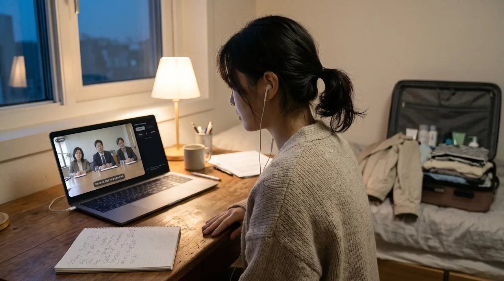

SYNK PATH 체험
한국 일터와 면접,
먼저 해 봐요.
한국 일터에서 하루를 보내 보고, 면접관 앞에서 답해 봐요. 휴대폰이나 PC로 앉아서 해요.

일터 체험
선배가 건네는 말에 한국어로 답하고, 갈림길에서 골라요. 끝나면 체험 기록 한 장을 받아요.
일터 고르기
면접 연습
면접관 세 명의 질문에 말이나 글로 답해요. 첫 답을 들은 면접관이 한 번 더 물어요.
면접 시작점수를 매기지 않아요맞고 틀린 답이 없어요. 내가 고른 것만 남아요.
말은 이 기기 안에서만말한 내용을 저장하거나 보내지 않아요.
VR 기기로도 할 수 있어요VR 기기(Meta Quest)의 인터넷 창에서 이 주소를 열면 VR로 해요. VR 기기가 없어도 끝까지 할 수 있어요.